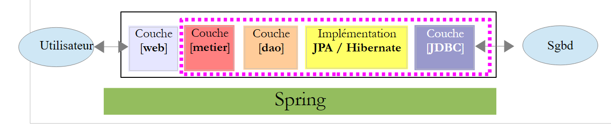
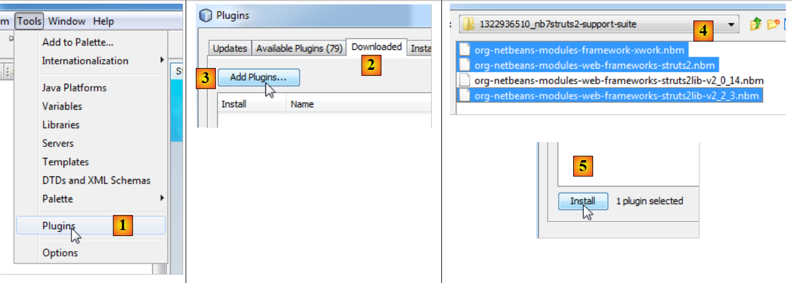

1. Introducción
El PDF del documento está disponible |AQUÍ|.
Los ejemplos del documento están disponibles |AQUÍ|.
Aquí nos proponemos presentar, con ayuda de ejemplos, los conceptos importantes de Struts 2. Struts 2 es un marco de trabajo web que proporciona:
- una serie de bibliotecas en formato JAR
- un marco de desarrollo: Struts 2 influye en la forma de desarrollar una aplicación web.
Los requisitos previos necesarios para comprender los ejemplos son los siguientes:
- conocimientos básicos del lenguaje Java
- conocimientos básicos de desarrollo web, en particular del lenguaje HTML.
En el sitio [https://developpez.com] se pueden encontrar todos los recursos necesarios para cumplir con estos requisitos previos. Yo he escrito algunos de ellos, que se pueden encontrar en el sitio [http://tahe.developpez.com].
Para profundizar en Struts 2, se pueden consultar las siguientes referencias:
- [ref1]: la documentación de Struts 2, que se puede encontrar en el sitio web de Struts
- [ref2]: el libro «Struts 2 in Action», escrito por Donald Brown, Chad Michael Davis y Scott Stanlick, publicado por Manning. Este libro es particularmente didáctico.
En ocasiones haremos referencia a [ref2] para indicar al lector que puede profundizar en un tema con este libro.
El documento se ha redactado de tal manera que se pueda leer sin necesidad de tener una computadora a la mano. Por eso, se incluyen muchas capturas de pantalla.
1.1. El papel de Struts 2 en una aplicación web
En primer lugar, situemos a Struts 2 en el desarrollo de una aplicación web. Por lo general, esta se construirá sobre una arquitectura de múltiples capas como la siguiente:
 |
- La capa [web] es la que está en contacto con el usuario de la aplicación web. Este interactúa con la aplicación web a través de páginas web visualizadas por un navegador. Es en esta capa donde se encuentra Struts 2 y únicamente en esta capa.
- La capa [metier] implementa las reglas de gestión de la aplicación, como el cálculo de un salario o de una factura. Esta capa utiliza datos provenientes del usuario a través de la capa [web] y del SGBD a través de la capa [dao].
- La capa [dao] (Objetos de Acceso a Datos), la capa [jpa] (API de Persistencia de Java) y el controlador JDBC gestionan el acceso a los datos del SGBD. La capa [jpa] funciona como un ORM (mapeador objeto-relacional). Actúa como puente entre los objetos manipulados por la capa [dao] y las filas y columnas de los datos de una base de datos relacional.
- La integración de las capas puede realizarse mediante un contenedor Spring o EJB3 (Enterprise Java Bean).
La mayoría de los ejemplos que se presentan a continuación utilizarán solo una capa, la capa [web]:
 |
Sin embargo, este documento concluirá con la construcción de una aplicación web de múltiples capas:
 |
El conjunto de capas [metier], [dao] y [jpa/hibernate] se nos proporcionará en forma de un archivo JAR, de modo que, una vez más, solo tendremos que construir la capa [web].
1.2. El modelo de desarrollo MVC de Struts 2
Struts 2 implementa el modelo de arquitectura conocido como MVC (Modelo – Vista – Controlador) de la siguiente manera:
 |
El procesamiento de una solicitud de un cliente se lleva a cabo de la siguiente manera:
Los URL solicitados tienen el formato http://machine:port/contexte/rep1/rep2/.../Action.. La ruta [/rep1/rep2/.../Action] debe corresponder a una acción definida en un archivo de configuración de Struts 2; de lo contrario, se rechaza. Una acción se define en un archivo XML con el siguiente formato:
En el ejemplo anterior, supongamos que se solicita la acción URL [ http://machine:port/contexte/actions/Action1]. En ese caso, se ejecutan los siguientes pasos:
-
solicitud: el navegador del usuario envía una solicitud al controlador [FilterDispatcher]. Este controlador recibe todas las solicitudes de los usuarios. Es la puerta de entrada de la aplicación. Es la «C» de MVC.
-
Procesamiento
- el controlador C consulta su archivo de configuración y descubre que existe la acción actions/Action1. El namespace (línea 1), concatenado con el nombre de la acción (atributo name de la línea 2), define la acción actions/Action1.
- El controlador C instancia [2a], una clase de tipo [actions.Action1] (atributo class de la línea 2). El nombre y el paquete de esta clase pueden ser cualesquiera.
- Si la clase URL solicitada va acompañada de parámetros de tipo [param1=val1¶m2=val2&...], entonces el controlador C asigna estos parámetros a la clase [actions.Action1] de la siguiente manera:
Por lo tanto, la clase [actions.Action1] debe contar con estos métodos setParami para cada uno de los parámetros parami esperados.
- (continuación)
- El controlador C solicita que se ejecute el método de firma [String execute()] de la clase [actions.Action1]. Este puede entonces utilizar los parámetros parami que la clase ha recuperado. Al procesar la solicitud del usuario, puede necesitar la capa [metier] [2b]. Una vez procesada la solicitud del cliente, esta puede generar diversas respuestas. Un ejemplo clásico es:
- una página de errores si la solicitud no se pudo procesar correctamente
- una página de confirmación en caso contrario
- El controlador C solicita que se ejecute el método de firma [String execute()] de la clase [actions.Action1]. Este puede entonces utilizar los parámetros parami que la clase ha recuperado. Al procesar la solicitud del usuario, puede necesitar la capa [metier] [2b]. Una vez procesada la solicitud del cliente, esta puede generar diversas respuestas. Un ejemplo clásico es:
El método execute devuelve al controlador C un resultado de tipo cadena de caracteres denominado clave de navegación. En el ejemplo anterior, [actions.Action1].execute puede generar dos claves de navegación: «page1» (línea 3) y «page2» (línea 4). El método [actions.Action1].execute también actualizará la plantilla M [2c] que utilizará la página JSP, la cual se enviará como respuesta al usuario. Esta plantilla puede incluir elementos de:
- (continuación)
- la clase [actions.Action1] instanciada
- la sesión del usuario
- datos de ámbito de la aplicación
- …
- respuesta: el controlador C solicita que se muestre la página JSP correspondiente a la clave de navegación [3]. Esta es la vista, la V de MVC. La página JSP utiliza una plantilla M para inicializar las partes dinámicas de la respuesta que debe enviar al cliente.
Ahora, aclaremos la relación entre la arquitectura web MVC y la arquitectura en capas. De hecho, se trata de dos conceptos diferentes que a veces se confunden. Tomemos como ejemplo una aplicación web Struts 2 de una sola capa:
 |
Si implementamos la capa [web] con Struts 2, tendremos una arquitectura web MVC, pero no una arquitectura de múltiples capas. Aquí, la capa [web] se encargará de todo: presentación, lógica de negocio y acceso a los datos. Con Struts 2, serán las clases del tipo [Action] las que realizarán esta tarea.
Ahora, consideremos una arquitectura web de múltiples capas:
 |
La capa [web] puede implementarse sin un marco de trabajo y sin seguir el modelo MVC. En este caso, sí tenemos una arquitectura de múltiples capas, pero la capa web no implementa el modelo MVC.
En MVC, dijimos que el modelo M era el de la vista V, c.a.d, es decir, el conjunto de datos que muestra la vista V. A veces (con frecuencia), se ofrece otra definición del modelo M de MVC:
 |
Muchos autores consideran que lo que se encuentra a la derecha de la capa [web] constituye el modelo M de MVC. Para evitar ambigüedades, se puede hablar de:
- del modelo del dominio cuando nos referimos a todo lo que se encuentra a la derecha de la capa [présentation]
- del modelo de la vista cuando se hace referencia a los datos que muestra una vista V
En lo sucesivo, el término «modelo M» se referirá exclusivamente al modelo de una vista V.
1.3. Las herramientas utilizadas
En lo sucesivo, utilizamos (diciembre de 2011)
- el IDE NetBeans 7.01, disponible en el URL [http://www.netbeans.org]
- el complemento Struts 2 para NetBeans 7.01, disponible en URL [http://plugins.netbeans.org/plugin/39218]
- la versión 2.2.3 de Struts 2 está disponible en URL [http://struts.apache.org/]
Cabe señalar que solo las bibliotecas de Struts 2 que se pueden obtener en URL [http://struts.apache.org/] son imprescindibles para desarrollar los ejemplos que se presentarán a continuación. NetBeans puede sustituirse por otro IDE (Eclipse, JDeveloper, IntelliJ, etc.) y el complemento de Struts 2 solo sirve para facilitarle la vida al desarrollador. Tampoco es imprescindible.
1.3.1. IDE NetBeans
En el sitio de descargas de NetBeans, elegimos la versión Java EE:

1.3.2. Plugin de Struts 2
Dependiendo de las versiones de NetBeans, este complemento no siempre ha estado disponible. En diciembre de 2011, se encuentra en URL [http://plugins.netbeans.org]. Este URL permite conocer los diferentes complementos disponibles para NetBeans. Se puede filtrar la búsqueda. En [1], se buscan los complementos que contengan la palabra «struts» en su nombre.
 |
- seguimos el enlace [2]
 |
Descargamos el complemento y lo descomprimimos [2]. Para integrarlo en NetBeans, podemos proceder de la siguiente manera:
- inicia NetBeans
 |
- en [1], selecciona el menú Herramientas/Complementos
- en la pestaña [2], usa el botón [3]
- en [4], selecciona los archivos .nbm de los complementos descargados. Aquí, elegimos las bibliotecas de Struts versión 2.2.3 en lugar de las de Struts 2.0.14
- De vuelta en la pestaña [2], instalamos los complementos seleccionados con el botón [5].
La instalación de los complementos suele requerir reiniciar NetBeans.
1.3.3. Las bibliotecas de Struts 2
Si se ha descargado el complemento de Struts 2 para NetBeans, se cuenta con las principales bibliotecas de Struts, pero no con todas. A continuación, necesitaremos ciertas bibliotecas disponibles en el sitio web de Struts 2 [http://struts.apache.org/].
 |
Seguimos el enlace [1] y luego el enlace [2] para descargar el archivo zip de la distribución 2.2.3.1. Una vez descomprimida la distribución, las bibliotecas necesarias para Struts se encuentran en la carpeta [lib] [3] de la distribución. Hay varias decenas de ellas, por lo que surge la pregunta de cuáles son imprescindibles. Ahí es donde nos ayudará el complemento de Struts.